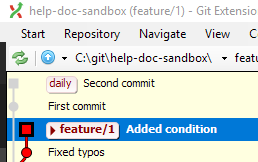
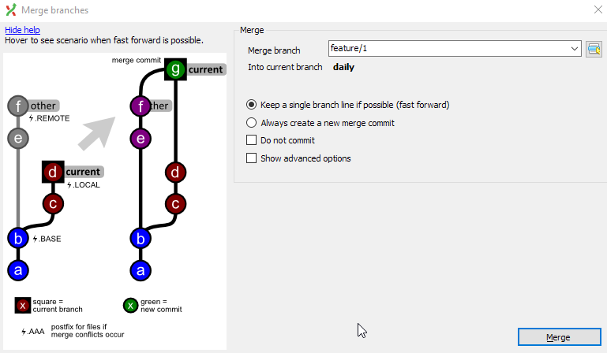
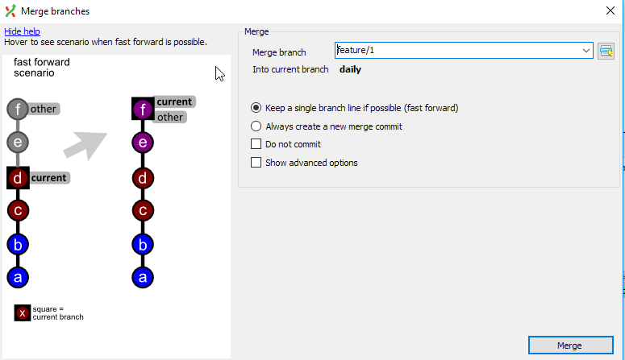
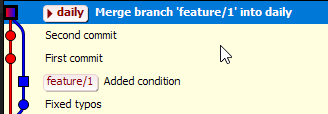

Merge with Git Extension¶
After you have finished with a feature or a task, you'll want to merge your feature branch into daily so you can build the output. You need to do a git merge.
Say we have the following structure, feature/HLP-1 and daily.
A--B--C feature/HLP-1
/
D--E--F--G daily
Let's assume we are on daily.
-
feature/HLP-1points to commit C, which has a history of B, A, and E.E is the commit where
feature/HLP-1diverged. -
dailypoints to commit G, which has a history of F through D.
Our goal is to merge feature/HLP-1 into daily, resulting in:
A--B--C feature/HLP-1
/ \
D--E--F--G---H daily
daily now points to a new commit H that has both commit H and commit C as its parents.
Merge¶
I'll use my omni sandbox repo to show a merge with Git Extension.
I created a feature/hlp-1 and did some work on this branch. I also did some work on daily. daily points to the commit with the message "second commit" and feature/HLP-1 points to a commit with the message "Added condition" Both branches have commits that the other branch does not have.

Git Extensions also shows me that I am on feature/HLP-1 (square commit).
I want to take the latest commit from feature/HLP-1 and merge that into daily.
-
Checkout
daily. -
Rihgt-click the latest commit on
feature/HLP-1. -
Select merge into current branch >
feature/HLP-1A dialog opens that looks like this:

This dialog shows you the graphical representation of what will happen to your branches after a merge commit. Also, since the Keep single branch line if possible is selected, when you hover over the image you'll see this:

This is showing you a fast-forward merge if this is possible. In our current example, this is not possible since our branch histories differ.
-
Select Merge.
The graph now looks like this:

Delete after finished¶
Make sure you are not checkout on the branch that you want to delete.
-
Right-click the commit beside the branch label in the graph.
-
Select Delete branch >
feature/HLP-1A dialog opens. You can select Force delete if you have some uncommitted changes on this branch that have not been merged (and that you don't want to keep).
-
Click Delete.
Note
You only want to delete feature branches after the work is finished that the commits have been squashed and cherry-picked to master.